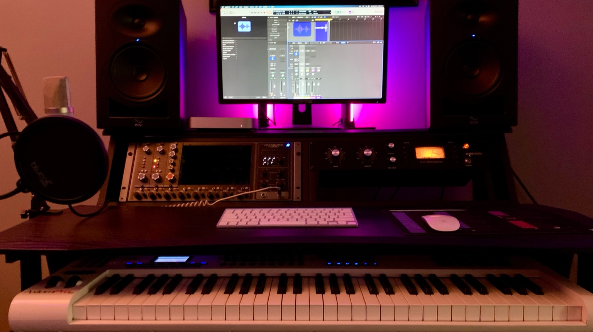
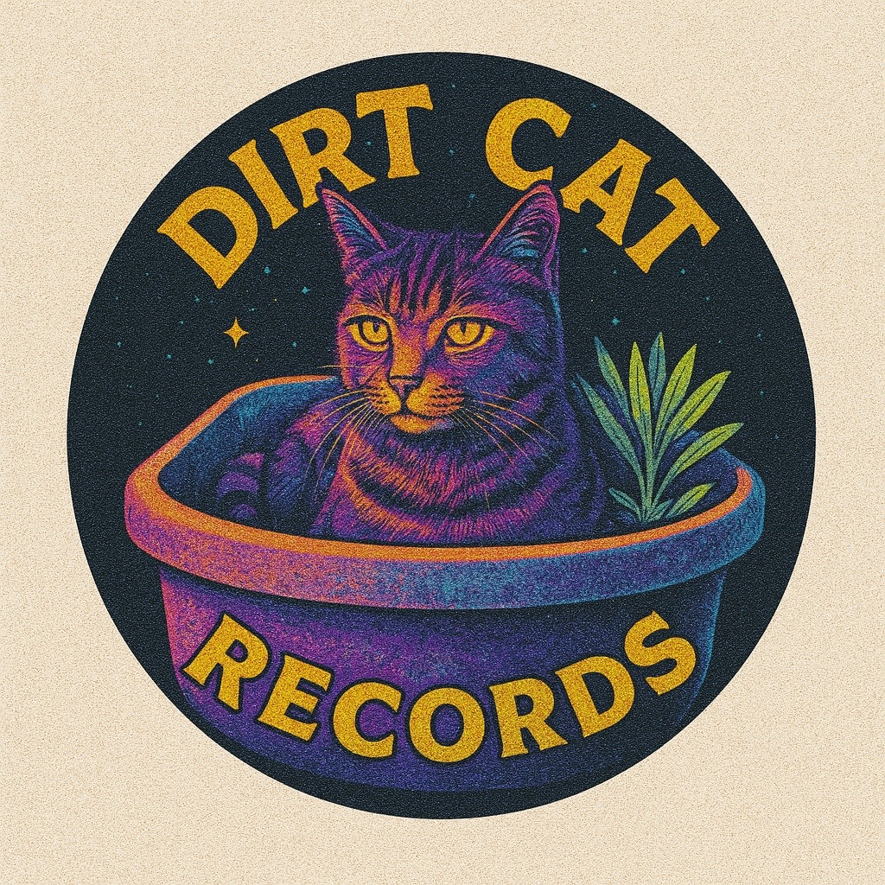

About the Studio
Our cozy, vibe-rich home studio is equipped with precision analog gear and digital tools to bring your sound to life—whether you're laying down vocals or finalizing a full mix.


Record with Soul. Mix with Precision. Master with Purpose.
Book a SessionOur cozy, vibe-rich home studio is equipped with precision analog gear and digital tools to bring your sound to life—whether you're laying down vocals or finalizing a full mix.
